Progression of the COVID outbreak in New South Wales
Last updated: 2021-12-21 09:18 Sydney timeUpdates daily around 9:20AM Sydney time
Contents
Reff estimate from all cases
New South Wales is currently experiencing an outbreak of COVID, due to the omicron variant. This comes after a wave due to the delta variant in mid-2021, during which New South Wales was under lockdown restrictions until vaccination levels were sufficient to slow the spread of the virus. With the omicron variant having significant immune escape, cases are now rising once again.
How have New South Wales' restrictions affected the spread of the virus? The below plot shows how the effective reproduction number of the virus, Reff has changed over time in New South Wales, as well as how the daily cases have changed over time. An exponential trendline shows the approximate trajectory daily case numbers would follow, were the reproduction number of the virus to remain at its current level.
The same plot is shown twice, the first with cases on a linear scale, and the second on a log scale—the latter showing how consistently the caseload has followed exponential growth (which forms a straight line on a log scale).
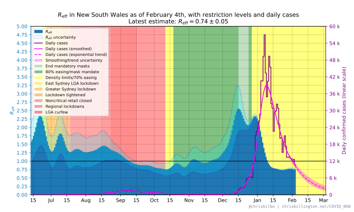
SIR model projection
The trendlines in the above plots simply project forward case numbers assuming that Reff remains at its current estimated value. What about the effect of built-up immunity? Below is a plot with the projected trend taking into account an estimated reduction of spread due to increasing immunity from infections, which slows transmission once a non-negligible fraction of the population has been infected. The projection assumes that only 20% of infections are captured by testing, as such, for every projected case there are an additional four infections implied that are not detected through testing.
This projection shows what might be possible if all other factors affecting Reff—such as restrictions—are held constant. If restrictions are tightened, then Reff will likely decrease and growth will slow, resulting in a later and lower peak in cases than the current projection.
Even if restrictions do not change, people may modify their behaviour once caseloads become higher, which also may reduce Reff.
This type of model is very simplistic, and should be taken with a grain of salt. The number of actual cases detected will depend strongly on what fraction of infections come forward for testing, which may change over time. Furthermore, this model treats the entire state as homogenous, whereas in reality some geographic areas or social networks will develop high immunity and thus slower growth before others. This can significantly affect the overall rate of spread, but is not captured in a simple model such as this.
The various effects not included in the model are also not included in the projection's uncertainty range, which is solely due uncertainty in the current Reff estimate and average caseload.
The same plot is shown twice, the first with cases on a linear scale, and the second on a log scale.
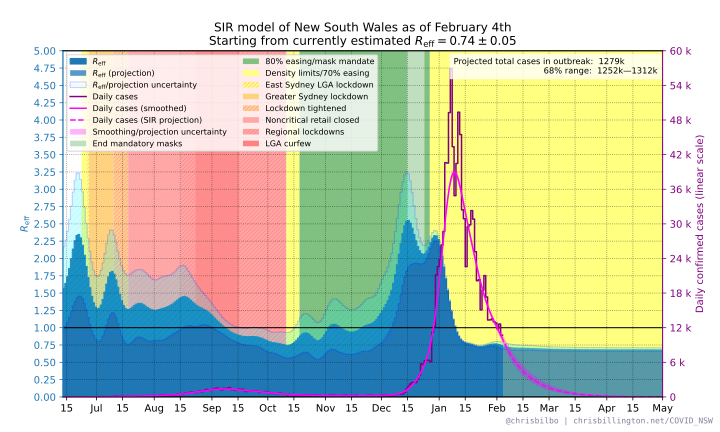 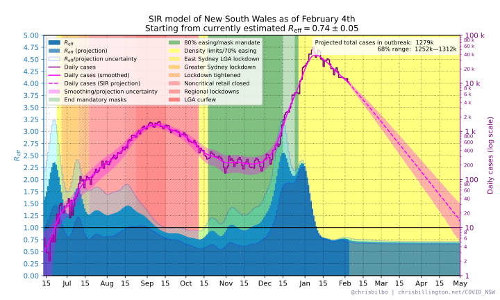Animated projections over time
How have the above projections changed over time? Below are animated versions of previous projections, one with cases on a linear scale, and one with cases on a log scale, run on old data to show how the projections have changed over time. Note that these are not 100% identical to the projections actually made on previous days, as there have been some slight methodology changes—but they should be very close.
Note that previously, the main factor affecting these projections was an estimated reduction in the rate of spread due to vaccines. The model is still the same, but there is no longer any expected future effect from increasing vaccines, as the 1st and 2nd dose rollout is mostly complete. 3rd doses are being rolled out, and this would affect spread, but is not taken into account in the model. At the current rate of spread, the increase in 3rd doses is likely to be too insignificant to make much of a difference to the omicron wave before it peaks in any case. If the wave is prolonged, I'll look into introducing 3rd doses to the model.
Reff in Greater Sydney vs rest of NSW
Below are two plots showing case numbers and an estimated Reff value in Greater Sydney (including Central Coast, Shellharbour and Wollongong), and the rest of New South Wales excluding Greater Sydney.
The data in this plot may be several days out of date due to the delay in New South Wales Health releasing data.
Note: case numbers on these plots are shown on a log scale.
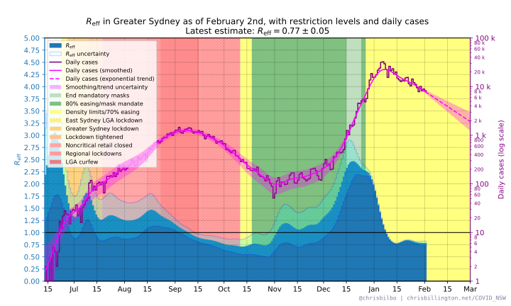 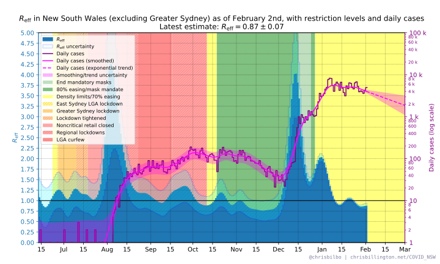Reff in the Hunter, Illawarra, and Western NSW regions
Below are plots showing an estimate of Reff in the Hunter region, Illawarra region, and Western New South Wales, as well as case numbers and an exponential trendine on a log scale.
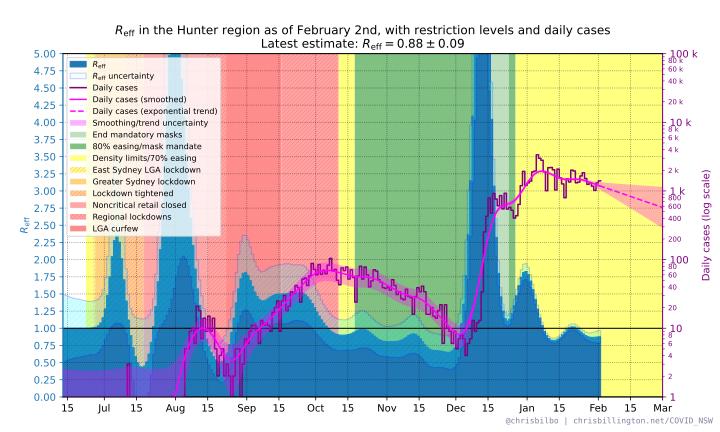 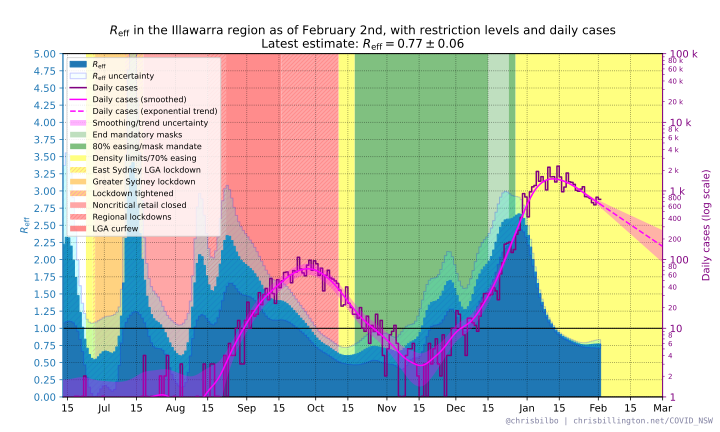 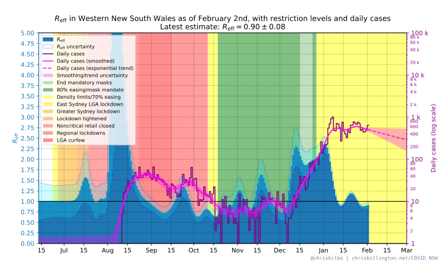Reff in LGAs of concern vs rest of NSW
Below are two plots showing case numbers and an estimated Reff value in the eleven (former) local government areas designated "of concern", and the rest of New South Wales excluding these eleven LGAs. Penrith as a whole is included as an LGA of concern, even though only some suburbs of Penrith were designated as such.
The data in this plot may be several days out of date due to the delay in New South Wales Health releasing data.
Note: case numbers on these plots are shown on a log scale.
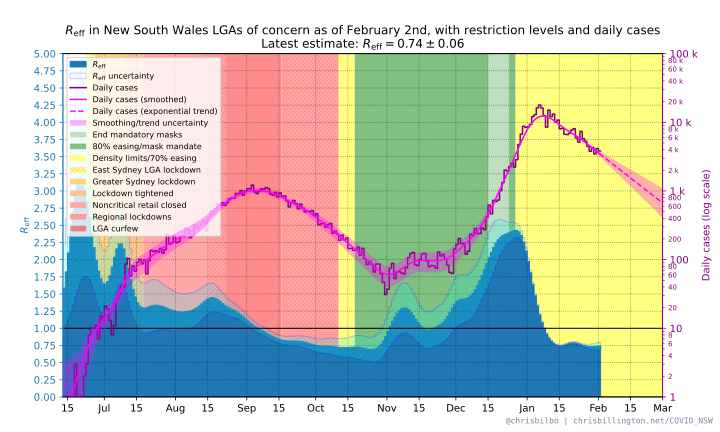
Reff in individual LGAs of concern
Below are plots of daily case numbers and estimated Reff values in the eleven New South Wales local government areas that were designated "LGAs of concern" by the New South Wales government during the delta wave, and were subject to additional restrictions. They are sorted by number of cases in the last fourteen days. Penrith as a whole is included, even though only some suburbs of Penrith were designated "of concern".
The data in these plots may be several days out of date due to the delay in New South Wales Health releasing data.
Note: case numbers on these plots are shown on a log scale.
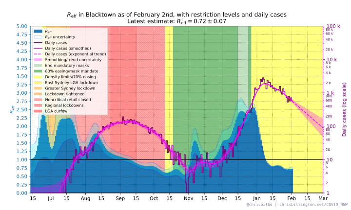 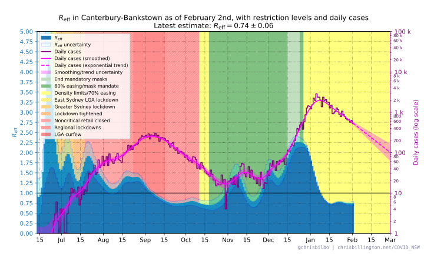 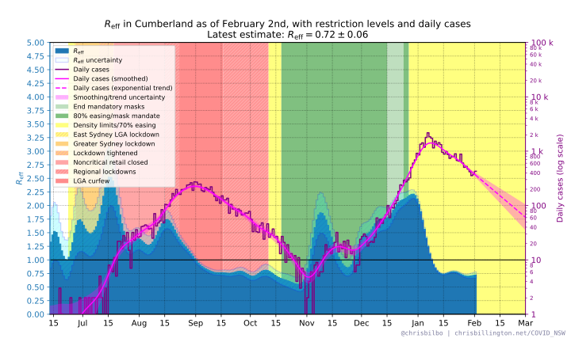 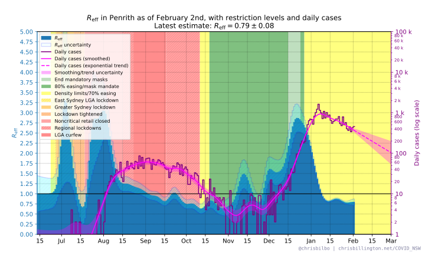
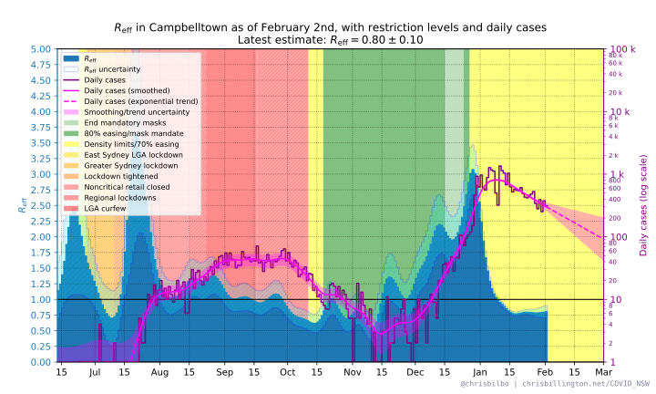
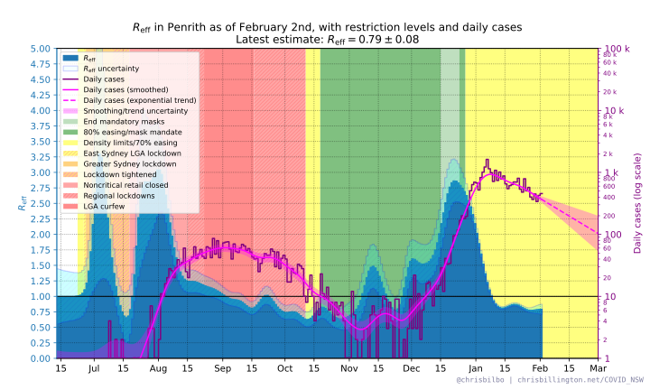
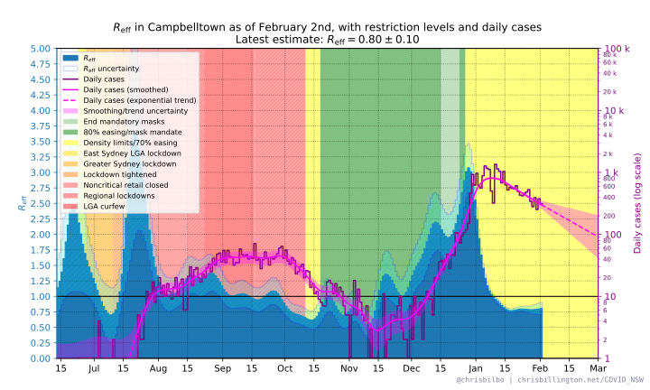
 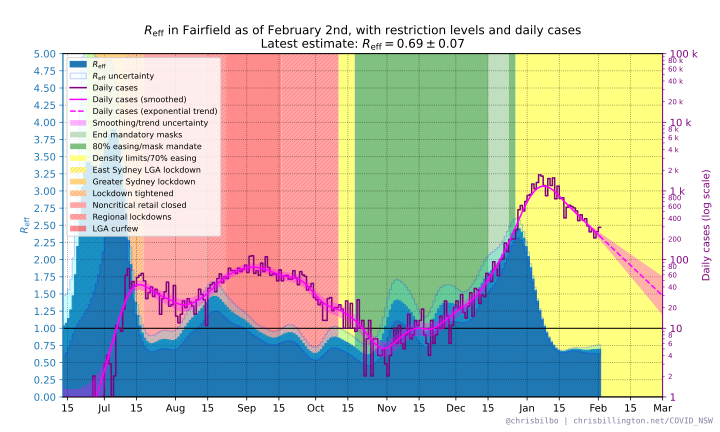
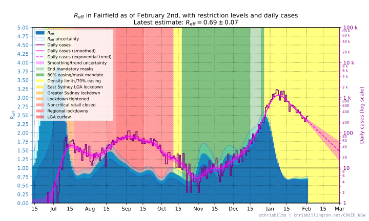
 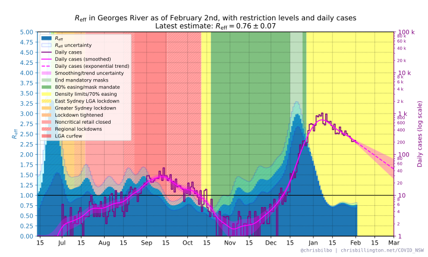
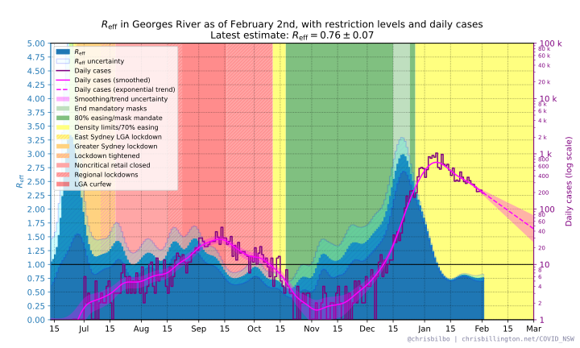
 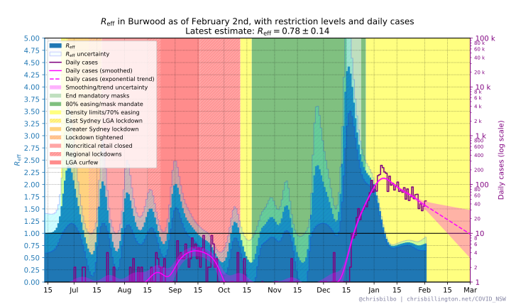
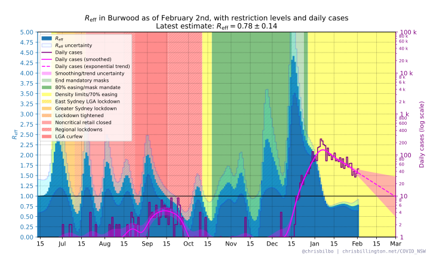
Disclaimer on trends
The plotted exponential trendlines in the above plots are simple extrapolations of what will happen if Reff remains at its current value. the SIR model projection, although it accounts for the effect of increasing immunity, still assumes that Reff otherwise remains constant.
This does not take into account that things are in a state of flux. If restrictions are tightened, the virus should have fewer opportunities for spread, and Reff will decrease. If restrictions are eased, it may increase. Contact tracing may suppress spread to a greater or lesser degree over time. The above plots specifically showing the effect of population immunity do take into account a reduction in Reff as immunity due to infections increases, but ignores any other possible future changes in Reff.
Furthermore, when case numbers are small, the random chance of how many people each infected person subsequently infects can cause estimates of Reff to vary randomly in time. As such the projections should be taken with a grain of salt—it is merely an indication of the trend as it is right now.
Methodology
Padding, smoothing, and calculating Reff
Before calculating Reff, the daily case numbers are padded on the right and smoothed. A symmetric smoothing method is used, which is why padding on the right is necessary before smoothing.
The padding is an extrapolation based on a fit to the most recent 14 days of daily case numbers n(t), with the following fit function:
n(t) = A exp[ k( t-ttoday) + 1/2 k̇ (t-ttoday )2 ]
where A and k are the fit parameters for the current daily caseload and exponential growth rate, and k̇ is the current expected rate of change of the exponential growth rate due to vaccines:
k̇ = 1 / ùúè (svax(ttoday) / svax(tyesterday) - 1)
where ùúè = 5 days is the approximate mean generation time of the virus, and svax(ttoday) and svax(tyesterday) are the fraction of the population not protected by vaccination from infection today and yesterday. See vaccination assumptions below for how svax(t) is calculated from vaccination numbers.
After padding, the daily case numbers—after adding an offset and taking their log— are smoothed with 4-day Gaussian smoothing. The result is then exponentiated and the offset subtracted off again to obtain smoothed daily case numbers. This is a compromise between ordinary Gaussian smoothing for small case numbers, and Gaussian smoothing in log space for larger case numbers.
log(nsmoothed(t)+10) = log(n(t)+10) ∗ (2ùúãTs2)-1/2 exp(-t2 / 2Ts2)
where Ts = 4 days and ∗ is the convolution operation.
Reff is then calculated for each day as:
Reff(ti) = (nsmoothed(ti) / nsmoothed(ti-1))ùúè.
The uncertainty in Reff has contributions from the uncertainty in the above-mentioned fit, as well as uncertainty in daily case numbers. The latter is considered to be Poisson noise scaled by a constant, chosen so as to make the reduced chi squared between raw and smoothed daily case numbers equal to 1.0.
Trend based on Reff only
The plot(s) with a simple exponential extrapolation of daily case numbers, without taking into account the expected effects of vaccines or population immunity, is exponential growth/decay using the most recent value of Reff and its uncertainty range:
nextrap (ti) = nsmoothed(ttoday) Reff(ttoday) (ti - ttoday) / ùúè
SIR model with projected effect of vaccines
To project the effect of vaccines and community immunity on the progression of daily cases in the future, I use a stochastic SIR model. The model is run 1000 times to project daily case numbers, and the median result and 68% range of outcomes shown in the projection.
In each run of the model, a random value for each of Reff(ttoday) and nsmoothed(ttoday) is drawn from a multivariate normal distribution, using the mean values and covariance of the estimates of the two parameters.
The initial infectious population is taken to be:
i(ttoday) = ùúè nsmoothed(ttoday)
The initial recovered population r(ttoday) is taken to be the cumulative number of cases so far in the outbreak, minus the currently infectious population.
Each day, the fraction of the population susceptible to infection s(t) is taken to be
s(t) = svax(t) [1 - (r(t) + i(t)) / N]
where svax(t) is the fraction of the population not protected from infection by vaccines (see See below for how this is calculated), and N is the total population multiplied by the fraction of infections assumed to come forward for testing (20%).
Assuming that Reff is proportional to the susceptible fraction of the population, we can estimate what the reproduction number of the virus would be in the absence of any vaccines or immunity from infection:
Rnaive = Reff(ttoday) / s(ttoday)
And compute an Reff for each future day based on the susceptible fraction of the population that day:
Reff(t) = s(t) Rnaive
Each day of the model, the infectious population is increased by the number of new infections, and decreased by the number of new recoveries. The recovered population is increased by the number of new recoveries.
The number of new infections each day is drawn from a Poission distribution with mean equal to i(t) Reff(t) / ùúè.
The number of new recoveries each days is drawn from a binomial distribution with number of trials equal to the infectious population i(t), and with probability 1 / ùúè.
Vaccination assumptions
To model vaccines taking effect after a delay, daily vaccine dose numbers v(t) are convolved with a Gaussian function offset 1.5 weeks in the future, with standard deviation 0.5 weeks:
veffective(t) = v(t) ∗ (2ùúãœÉ2)-1/2 exp(-(t - Œº)2 / 2œÉ2)
where μ = 10.5 days, σ = 3.5 days, and ∗ is the convolution operation. This causes the effect of a vaccine dose to over the course of the second week after it is adminsitered, reaching nearly full effectiveness approximately two weeks after administration.
I assume that one dose of any vaccine reduces spread by 40%, and two doses reduce spread by 80%. The proportion of the population not protected by the vaccine against infection is then:
svax(ti) = 1 - 0.4 × d(ti)
where d(ti) is the cumulative number of doses per capita on each day.
As of Dec 2021, these vaccine assumptions are not particularly relevant to the projections, as the 1st and 2nd dose rollouts are mostly complete, and omicron likely escapes most vaccine-induced immunity against infection in any case. I am not yet including a modelled effect of 3rd doses, but may do so if the omicron waves last long enough for it to plausibly make a difference to spread, or if 3rd doses are brought forward in time.
Data sources and contact
Source for case numbers: covidlive.com.au and NSW Health
Plots/analysis by Chris Billington. Contact: chrisjbillington [at] gmail [dot] com
Python script for producing the plots can be found at GitHub.